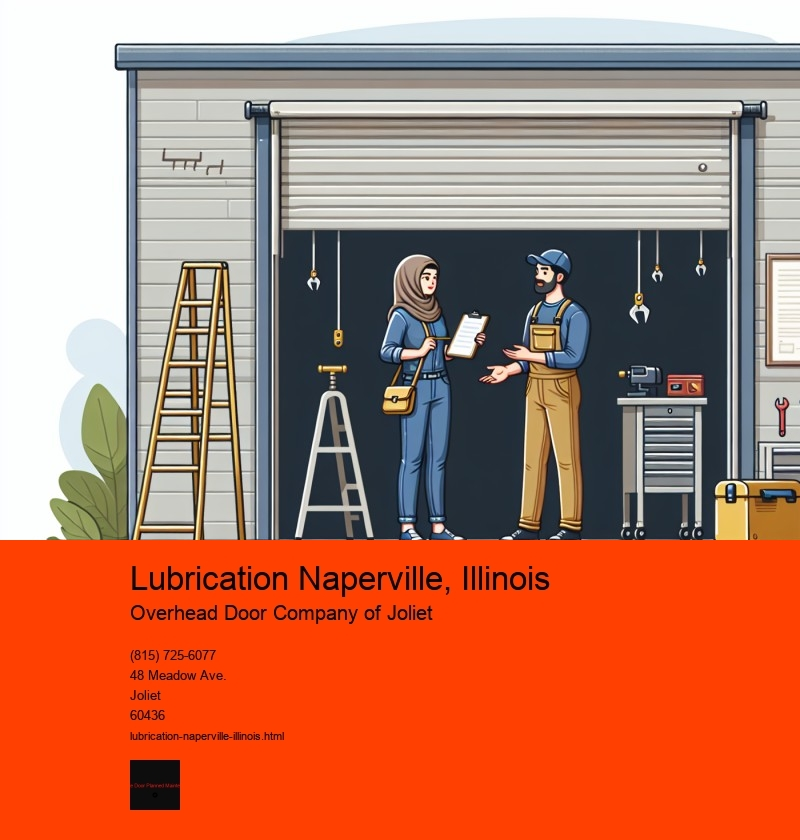

The Essential Role of Lubrication in Naperville, Illinois
Nestled in the heart of Illinois, Naperville is a vibrant city known for its blend of historic charm and modern innovation. As with any bustling community, the residents and businesses of Naperville rely heavily on the seamless operation of machinery and vehicles to keep daily life running smoothly. A critical but often overlooked factor in ensuring this smooth operation is lubrication. From automobiles to industrial machinery, the role of lubrication in Naperville is both indispensable and multifaceted.
Lubrication is the process of applying a substance, usually a fluid, to reduce friction between surfaces in mutual contact, which ultimately reduces the heat generated when the surfaces move. This process is crucial in prolonging the life of engines and machinery, ensuring efficiency, and preventing costly breakdowns. In a city like Naperville, where weather conditions can vary dramatically from hot summers to freezing winters, the need for effective lubrication becomes even more pronounced.
Automobiles are perhaps the most common area where residents encounter the need for lubrication. With thousands of vehicles traversing the roads of Naperville daily, regular maintenance that includes proper lubrication is vital. Oil changes, for instance, are not just a routine procedure; they are a critical component of vehicle care that prevents engine wear and tear. The fluctuating temperatures in Naperville can affect oil viscosity, making it crucial for car owners to choose the right type of oil for their vehicle and the season. Proper lubrication ensures that engines run smoothly, reduces fuel consumption, and helps prevent unexpected breakdowns, which is especially important for those commuting to nearby Chicago or other suburbs for work.
Beyond personal vehicles, Napervilles thriving industrial sector also relies heavily on lubrication. Manufacturing facilities, many of which form the backbone of the local economy, use a wide array of machinery that requires regular lubrication to function efficiently. From conveyor belts to complex robotic arms, each piece of equipment needs the right type of lubricant to minimize friction and wear, thus maximizing productivity and minimizing downtime. Industrial lubricants often need to withstand higher temperatures and pressures, making their selection and application a task for skilled professionals.
Furthermore, lubrication plays a significant role in the maintenance of public infrastructure in Naperville. City services, such as public transportation and emergency services, depend on well-lubricated vehicles and equipment to provide reliable service to the community. Inadequate lubrication can lead to mechanical failures that disrupt these essential services, underscoring the importance of regular maintenance schedules and quality lubricants.
In addition to its practical benefits, effective lubrication also contributes to environmental sustainability. By reducing friction and wear, lubrication helps decrease energy consumption and extends the lifespan of machinery, which in turn reduces waste. In an era where environmental concerns are paramount, the role of lubrication in promoting efficient operations aligns with Napervilles commitment to sustainability and environmental stewardship.
In conclusion, lubrication is a crucial element in the daily operations of Naperville, Illinois. Whether in personal vehicles, industrial machinery, or public infrastructure, the benefits of proper lubrication extend far beyond mere mechanical efficiency. It is an essential practice that supports economic vitality, environmental sustainability, and the overall quality of life in this vibrant city. As Naperville continues to grow and evolve, the role of lubrication will remain a foundational aspect of keeping the city running smoothly and efficiently.
Choosing Appropriate Lubricants Naperville, Illinois
